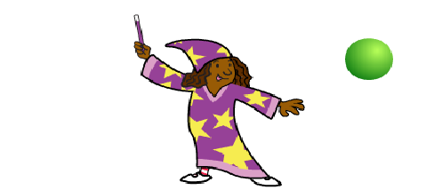
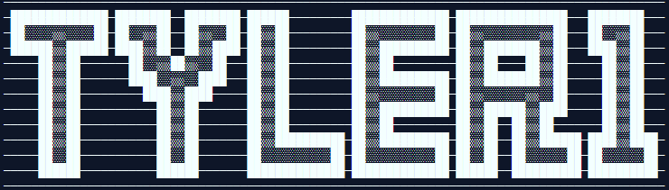
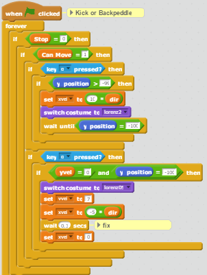

| My Github |
My Scratch Profile |
My Puzzle Game [Create Task] |
Jump Kick |
My "First" Game |
Interactive Story |

|

|
|

|

|

|
|
|
My Puzzle Game for the create task with buttons and boxes and speedrunning. |
I decided to recreate the game DiveKick in scratch for the arcade day because of its short game time as well as the complex gameplay but simple controls. |
You run around collecting fruits |
This story revolves around a League of Legends game and a Draven player named Tyler1. He is known for his aggressive playstyle and bad behavior. Reflections: |
|
|
Fun. Beat my high score! |
I had an issue with having two actions on one key It caused the character to do both actions at the same time when on the ground and the wait function caused velocity to suddenly be zero, but these was turned into features. More on JumpKick. |
|
This story had two conflicting identities, one where it would parody the character of tyler1 in a funny way and one where it would accurately resemble a game of league. I used the website draw.io to create a treemap of all of the branches of the story. I used and learned about python modules and using functions to simplify the tree for the story. A problem I encountered while working on this was that I had already finished writing the story in python and I now had to account for user error, leading me to lazily seperate the story into their functions. I'm not happy with the story because the idea behind it sucks and I used it just to spite my friend Nethan, who wanted to use it. I wish I had spent more time on this so I could properly flesh out the identity of the story and its content. I didn't enjoy any stories in particular and I would correct all the faults I mentioned before if I had a chance to do it again. |